항공산업기사 (2020-08-22 기출문제)
1과목: 항공역학
1. 날개면적이 150m2, 스팬(span)이 25m인 비행기의 가로세로비(aspect ratio)는 약 얼마인가?
- 3.0
- 4.17
- 5.1
- 7.1
(정답률: 79%)

2. 비행기가 고속으로 비행할 때 날개 위에서 충격실속이 발생하는 시기는?
- 아음속에서 생긴다.
- 극초음속에서 생긴다.
- 임계 마하수에 도달한 후에 생긴다.
- 임계 마하수에 도달하기 전에 생긴다.
(정답률: 82%)
3. 다음 중 항공기의 가로안정에 영향을 미치지 않는 것은?
- 동체
- 쳐든각 효과
- 도어(door)
- 수직 꼬리 날개
(정답률: 82%)
4. 음속을 구하는 식으로 옳은 것은? (단, K : 비열비, R : 공기의 기체상수, g : 중력가속도, T : 공기의 온도이다.)
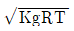
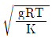
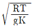
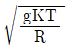
(정답률: 76%)
5. 날개 드롭(wing drop) 현상에 대한 설명으로 옳은 것은?
- 비행기의 어떤 한 축에 대한 변화가 생겼을 때 다른 축에도 변화를 일으키는 현상
- 음속비행 시 날개에 발생하는 충격실속에 의해 기수가 오히려 급격히 내려가는 현상
- 하강비행 시 기수를 올리려 할 때, 받음각과 각속도가 특정값을 넘게 되면 예상한 정도 이상으로 기수가 올라가는 현상
- 비행기의 속도가 증가하여 천음속 영역에 도달하게 되면 한쪽 날개가 총격실속을 일으켜서 갑자기 양력을 상실하고 급격한 옆놀이(rolling)를 일으키는 현상
(정답률: 77%)
6. 정상수평비행하는 항공기의 필요마력에 대한 설명으로 옳은 것은?
- 속도가 작을수록 필요마력은 크다.
- 항력이 작을수록 필요마력은 작다.
- 날개하중이 작을수록 필요마력은 커진다.
- 고도가 높을수록 밀도가 증가하여 필요마력은 커진다.
(정답률: 69%)
7. 항공기 날개의 압력중심(center of pressure)에 대한 설명으로 옳은 것은?
- 날개 주변 유체의 박리점과 일치한다.
- 받음각이 변하더라도 피칭모멘트값이 변하지 않는 점이다.
- 받음각이 커짐에 따라 압력중심은 앞으로 이동한다.
- 양력이 급격히 떨어지는 지점의 받음각을 말한다.
(정답률: 71%)
8. 헬리콥터의 주회전날개에 플래핑 힌지를 장착함으로써 얻을 수 있는 장점이 아닌 것은?
- 돌풍에 의한 영향을 제거할 수 있다.
- 지면효과를 발생시켜 양력을 증가시킬 수 있다.
- 회전축을 기울이지 않고 회전면을 기울일 수 있다.
- 주회전날개 깃 뿌리(root)에 걸린 굽힘모멘트를 줄일 수 있다.
(정답률: 57%)
9. 양항비가 10인 항공기가 고도 2000m에서 활공비행 시 도달하는 활공거리는 몇 m인가?
- 10000
- 15000
- 20000
- 40000
(정답률: 88%)
10. 등속상승비행에 대한 상승률을 나타내는 식이 아닌 것은? (단, V: 비행속도, γ: 상승각, W: 항공기 무게, T: 추력, D:항력, Pa: 이용동력, Pr: 필요동력이다.)
- (Pa-Pr)/W
- 잉여동력/W
- [(T-D)V]/W
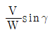
(정답률: 58%)
11. 엔진고장 등으로 프로펠러의 페더링을 하기 위한 프로펠러의 깃각 상태는?
- 0°가 되게 한다.
- 45°가 되게 한다.
- 90°가 되게 한다.
- 프로펠러에 따라 지정된 고유값을 유지한다.
(정답률: 69%)
12. 항공기의 성능 등을 평가하기 위하여 표준대기를 국제적으로 통일하여 정한 기관의 명칭은?
- ICAO
- ISO
- EASA
- FAA
(정답률: 83%)
13. 헬리콥터 회전날개의 코닝각에 대한 설명으로 틀린 것은?
- 양력이 증가하면 코닝각은 증가한다.
- 무게가 증가하면 코닝각은 증가한다.
- 회전날개의 회전속도가 증가하면 코닝각은 증가한다.
- 헬리콥터의 전진속도가 증가하면 코닝각은 증가한다.
(정답률: 46%)
14. 그림과 같은 프로펠러 항공기의 비행속도에 따른 필요마력과 이용마력의 분포에 대한 설명으로 옳은 것은?
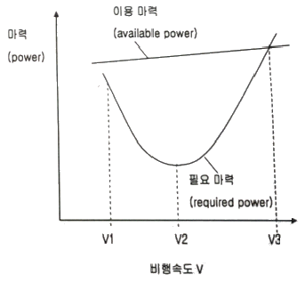
- 비행속도 V1에서 주어진 연료로 최대의 비행거리를 비행할 수 있다.
- 비행속도 V1 근처에서 필요마력이 감소하는 것은 유해항력의 증가에 기인한다.
- 일반적으로 비행속도 V2에서 최대 양항비를 갖도록 항공기 형상을 설계한다.
- 비행속도가 V2에서 V3 방향으로 증가함에 따라 프로펠러 토크에 의한 롤 모멘트(roll moment)가 증가한다.
(정답률: 47%)
15. 항공기 날개의 유도항력계수를 나타낸 식으로 옳은 것은? (단, AR: 날개의 가로세로비, CL: 양력계수, e: 스팬(span) 효율계수이다.)
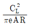
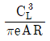
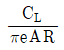
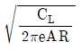
(정답률: 67%)
16. 수평비행의 실속속도가 71㎞/h인 항공기가 선회경사각 60°로 정상선회비행 할 경우 실속속도는 약 몇 ㎞인가?
- 80
- 90
- 100
- 110
(정답률: 48%)
17. 이륙 시 활주거리를 감소시킬 수 있는 방법으로 옳은 것은?
- 플랩을 활용하여 최대양력계수를 증가시킨다.
- 양항비를 높여 항력을 증가시킨다.
- 최소 추력을 내어 가속력을 줄인다.
- 양항비를 높여 실속속도를 증가시킨다.
(정답률: 74%)
18. 지름이 20㎝와 30㎝로 연결된 관에서 지름 20㎝ 관에서의 속도가 2.4m/s일 때 30㎝ 관에서의속도는 약 몇 m/s인가?
- 0.19
- 1.07
- 1.74
- 1.98
(정답률: 58%)
19. 키놀이 모멘트(pitching moment)에 대한 설명으로 옳은 것은?
- 프로펠러 깃의 각도 변경에 관련된 모멘트이다.
- 비행기의 수직축(상하축; vertical axis)에 관한 모멘트이다.
- 비행기의 세로축(전후축; longitudinal axis)에 관한 모멘트이다.
- 비행기의 가로축(좌우축; lateral axis)에 관한 모멘트이다.
(정답률: 68%)
20. 프로펠러 비행기가 최대 항속거리를 비행하기 위한 조건으로 옳은 것은? (단, CL은 양력계수, CD는 항력계수이다.)
 가 최소일 때
가 최소일 때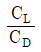
가 최대일 때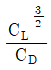
가 최대일 때 가 최소일 때
가 최소일 때
(정답률: 71%)
2과목: 항공기관
21. 전기식 시동기(electrical starter)에서 클러치(clutch)의 작동 토크 값을 설정하는 장치는?
- Clutch Plate
- Clutch Housing Slip
- Ratchet Adjust Regulator
- Slip Torque Adjustment Unit
(정답률: 67%)
22. 프로펠러에서 기하학적 피치(geometrical pitch)에 대한 설명으로 옳은 것은?
- 프로펠러를 1바퀴 회전시켜 실제로 전진한 거리이다.
- 프로펠러를 2바퀴 회전시켜 실제로 전진한 거리이다.
- 프로펠러를 1바퀴 회전시켜 전진할 수 있는 이론적인 거리이다.
- 프로펠러를 2바퀴 회전시켜 전진할 수 있는 이론적인 거리이다.
(정답률: 76%)
23. 속도 720㎞/h로 비행하는 항공기에 정착된 터보제트엔진이 300kgf/s로 공기를 흡입하여 400m/s의속도로 배기시킨다면 이때 진추력은 몇 kgf인가? (단, 중력가속도는 10m/s2로힌다.)
- 3000
- 6000
- 9000
- 18000
(정답률: 55%)
24. 밀폐계(closed system)에서 열역학 제1법칙을 옳게 설명한 것은?
- 엔트로피는 절대로 줄어들지 않는다.
- 열과 에너지, 일은 상호 변환 가능하며 보존된다.
- 열효율이 100%인 동력장치는 불가능하다.
- 2개의 열원사이에 동력 사이클을 구성할 수 있다.
(정답률: 75%)
25. 가스터빈엔진에서 압축기 입구온도가 200K, 압력이 1.0kgf/cm2이고, 압축기 출구압력이 10kgf/cm2일 때 압축기 출구온도는 약 몇 K인가? (단, 공기 비열비는 1.4이다.)
- 184.14
- 285.14
- 386.14
- 487.14
(정답률: 36%)
26. 왕복엔진의 악세서리(accessory)부품이 아닌 것은?
- 시동기(starter)
- 하네스(harness)
- 기화기(carburetor)
- 블리드 밸브(bleed valve)
(정답률: 59%)
27. 항공기용 엔진 중 터빈식 회전엔진이 아닌 것은?
- 램제트엔진
- 터보프롭엔진
- 터보제트엔진
- 터보샤프트엔진
(정답률: 73%)
28. 고열의 엔진 배기구 부분에 표시(marking)를 할 때 납이나 탄소 성분이 있는 필기구를 사용하면 안 되는 주된 이유는?
- 고열에 의해 열응력이 집중되어 균열을 발생시킨다.
- 고압에 의해 비틀림 응력이 집중된어 균열을 발생시킨다.
- 고압에 의해 전단응력이 집중되어 균열을 발생시킨다.
- 고열에 의해 전단응력이 집중되어 균열을 발생시킨다.
(정답률: 75%)
29. 프로펠러 페더링(feathering)에 대한 설명으로 옳은 것은?
- 프로펠러 페더링은 엔진 축과 연결된 기어를 분리하는 방식이다.
- 비행 중 엔진정지 시 프로펠러 회전도 같이 멈추게 하여 엔진의 2차 손상을 방지한다.
- 프로펠러 페더링을 하게 되면 항력이 증가하여 항공기 속도를 줄일 수 있다.
- 프로펠러 페더링을 하게 되면 바람에 의해 프로펠러가 공회전하는 윈드밀링(wind milling)이 발생하게 된다.
(정답률: 62%)
30. 복식 연료노즐에 대한 설명으로 틀린 것은?
- 1차 연료는 넓은 각도로 분사된다.
- 공기를 공급하여 미세하게 분사되도록 한다.
- 2차 연료는 고속회전 시 1차 연료보다 멀리 분사된다.
- 1차 연료는 노즐의 가장자리 구멍으로 분사되고, 2차 연료는 중심에 있는 작은 구멍을 통하여 분사된다.
(정답률: 59%)
31. 왕복엔진의 마그네토에서 브레이커포인트 간격이 커지면 발생되는 현상은?
- 점화가 늦어진다.
- 전압이 증가한다.
- 점화가 빨라진다.
- 점화불꽃이 강해진다.
(정답률: 55%)
32. 왕복엔진에 사용되는 고휘발성 연료가 너무 쉽게 증발하여 연료배관내에서 기포가 형성되어 초래할 수 있는 현상은?
- 베이퍼 락(vapor lock)
- 임팩트 아이스(impact ice)
- 하이드로릭 락(hydraulic lock)
- 이베포레이션 아이스(evaporation ice)
(정답률: 79%)
33. 이상기체의 등온과정에 대한 설명으로 옳은 것은?
- 단열과정과 같다.
- 일의 출입이 없다.
- 엔트로피가 일정하다.
- 내부에너지가 일정하다.
(정답률: 46%)
34. 가스터빈엔진의 흡입구에 형성된 얼음이 압축기 실속을 일으키는 이유는?
- 공기압력을 증가시키기 때문에
- 공기 전압력을 일정하게 하기 때문에
- 형성된 얼음이 압축기로 흡입되어 로터를 파손시키기 때문에
- 흡입 안내 깃으로 공기의 흐름이 원활하지 못하기 때문에
(정답률: 73%)
35. 다음 중 주된 추진력을 발생하는 기체가 다른 것은?
- 램제트엔진
- 터보팬엔진
- 터보프롭엔진
- 터보제트엔진
(정답률: 47%)
36. 왕복엔진을 낮은 기온에서 시동하기 위해 오일희석(oil dilution)장치에서 사용하는 것은?
- Alcohol
- Propane
- Gasoline
- Kerosene
(정답률: 69%)
37. 터빈엔진에서 과열시동(hot start)을 방지하기 위하여 확인해야 하는 계기는?
- 토크 미터
- EGT 지시계
- 출력 지시계
- RPM 지시계
(정답률: 76%)
38. 왕복엔진의 흡기밸브를 작동시키는 관련 부품으로 볼 수 없는 것은?
- 캠(cam)
- 푸시 로드(push rod)
- 로커 암(rocker arm)
- 실린더 헤드(cylinder head)
(정답률: 63%)
39. 가스터빈엔진의 공기흡입 덕트(duct)에서 발생하는 램 회복점에 대한 설명으로 옳은 것은?
- 흡입구 내부의 압력이 대기압과 같아질 때의 항공기 속도
- 마찰압력 손실이 최소가 되는 항공기의 속도
- 마찰압력 손실이 최대가 되는 항공기의 속도
- 램 압력상승이 최대가 되는 항공기의 속도
(정답률: 60%)
40. 왕복엔진의 연료-공기 혼합비(fule-air ratio)에 영향을 주는 공기밀도변화에 대한 설명으로 틀린 것은?
- 고도가 증가하면 공기밀도가 감소한다.
- 연료가 증가하면 공기밀도가 증가한다.
- 온도가 증가하면 공기밀도가 감소한다.
- 대기 압력이 증가하면 공기밀도가 증가한다.
(정답률: 57%)
3과목: 항공기체
41. 항공기엔진 장착 방식에 대한 설명으로 옳은 것은?
- 가스터빈엔진은 구조적인 이유로 동체 내부에 장착이 불가능하다.
- 동체에 엔진을 장작하려면 파일론(pylon)을 설치하여야 한다.
- 날개에 엔진을 장착하면 날개의 공기역학적 성능을 저하시킨다.
- 왕복엔진 장착부분에 설치된 나셀의 카울링은 진동감소와 화재 시 탈출구로 사용된다.
(정답률: 63%)
42. 다음 특징을 갖는 배열 방식의 착륙장치는?
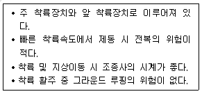
- 텐덤식 착륙장치
- 후륜식 착륙장치
- 전륜식 착륙장치
- 충격흡수식 착륙장치
(정답률: 71%)
43. 대형 항공기에 주로 사용하는 3중 슬롯 플랩을 구성하는 플랩이 아닌 것은?
- 상방플랩
- 전방플랩
- 중앙플랩
- 후방플랩
(정답률: 61%)
44. 손상된 판재를 리벳에 의한 수리작업 시 리벳수를 결정하는 식으로 옳은 것은? (단, L : 판재의 손상된 길이, D: 리벳지름, t: 손상된 판의 두께, s: 안전계수, σmax: 판재의 최대인장응력, τmax: 판재의 최대전단응력이다.)
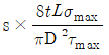
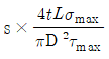
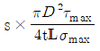
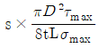
(정답률: 52%)
45. 항공기 외피용으로 적합하며, 플러시 헤드 리벳(flush head rivet)이라 부르는 것은?
- 납작머리리벳(flat head rivet)
- 유니버설리벳(universal rivet)
- 둥근머리리벳(round rivet)
- 접시머리리벳(counter sunk ead rivet)
(정답률: 65%)
46. 실속속도가 90mph 항공기를 120mph로 수평 비행 중 조종간을 급히 당겨 최대 양력계수가 작용하는 상태라면 주 날개에 작용하는 하중배수는 약 얼마인가?
- 1.5
- 1.78
- 2.3
- 2.57
(정답률: 59%)
47. 그림과 같은 평면응력상태에 있는 한 요소가 σx=100MPa, σy=20MPa, τxy=60MPa의 응력을 받고 있을 때, 최대전단응력은 약 몇 MPa인가?
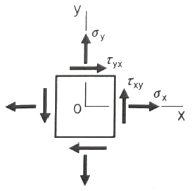
- 67.11
- 72.11
- 77.11
- 87.11
(정답률: 42%)
48. 페일세이프(fail safe) 구조형식이 아닌 것은?
- 이중(double)구조
- 대치(back-up)구조
- 다경로(redundant)구조
- 샌드위치(sandwich)구조
(정답률: 78%)
49. 복합재료(composite material)를 수리할 때 접착용 수지를 효과적으로 접착시키기(curing) 위하여 열을 가하는 장비가 아니 것은?
- 오븐(oven)
- 가열건(heat gun)
- 가열램프(heat lamp)
- 진공백(vacuum bag)
(정답률: 73%)
50. 연료계통이 갖추어야 하는 조건으로 틀린 것은?
- 번개에 의한 연료발화가 발생하지 않도록 해야 한다.
- 각각의 엔진과 보조동력장치에 공급되는 연료에서 오염물질을 제거할 수 있어야 한다.
- 계통에 저장된 연료를 안전하게 제거하거나 격리할 수 있어야 한다.
- 고장발생 감지가 유용하고록 한계통 구성품의 고장이 다른 연료계통의 고장으로 연결되어야 한다.
(정답률: 75%)
51. 복합재료에서 모재(matrix)와 경합되는 강화재(reinforcing material)로 사용되지 않는 것은?
- 유리
- 탄소
- 에폭시
- 보론
(정답률: 65%)
52. 조종간이나 방향키 폐달의 움직임을 전기적인 신호로 변환하고 컴퓨터에 입력 후 전기, 유압식 작동기를 통해 조종계통을 작동하는 조종방식은?
- Cable control system
- Automatic pilot system
- Fly-By-Wire control system
- Push Pull Rod control system
(정답률: 74%)
53. 연료를 제외하고 화물, 승객 등이 적재된 항공기의 무게를 의미하는 것은?
- 최대 무게(maximum weight)
- 영연료 무게(zero fuel weight)
- 기본자기 무게(basic empty weight)
- 운항 빈 무게(operating empty weight)
(정답률: 72%)
54. 티타늄합금에 대한 설명으로 옳은 것은?
- 열전도 계수가 크다.
- 불순물이 들어가면 가공 후 자연경화를 일으켜 강도를 좋게 한다.
- 티타늄은 고온에서 산소, 질소, 수소 등과 친화력이 매우 크고, 또한 이러한 가스를 흡수하면 강도가 매우 약해진다.
- 합금원소로써 Cu가 포함되어 있어 취성을 감소시키는 역할을 한다.
(정답률: 63%)
55. 이질 금속간의 접촉부식에서 알루미늄 합금의 경우 A그룹과 B그룹으로 구분하였을 때 그룹이 다른 것은?
- 2014
- 2017
- 2024
- 5⑤2
(정답률: 69%)
56. 다음 중 가스용접에 해당하는 것은?
- 산소-수소용접
- MIG용접
- CO2용접
- TIG용접
(정답률: 54%)
57. 너트의 부품 번호가 AN310D-5일 때 310은 무엇을 나타내는가?
- 너트 계열
- 너트 지름
- 너트 길이
- 재질 번호
(정답률: 59%)
58. 그림과 같이 하중(W)이 작용하는 보를 무엇이라 하는가?
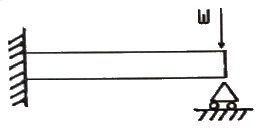
- 외팔보
- 돌출보
- 고정보
- 고정 지지보
(정답률: 60%)
59. 비행기가 양력을 발생함이 없이 급강하할 때 날개는 비틀림 등의 하중을 받게 되며 이러한 하중에 항공기가 구조적으로 견딜 수 있는 설계상의 최대속도는?
- 설계순항속도
- 설계급강하속도
- 설계운용속도
- 설계돌풍운용속도
(정답률: 73%)
60. 단줄 유니버설 헤드 리벳(universal head rivet)작업을 할 때 최소 끝거리 및 리벳의 최소 간격()의기준으로 옳은 것은?
- 최소 끝거리는 리벳 직경의 2배 이상, 최소 간격은 리벳 직경의 3배
- 최소 끝거리는 리벳 직경의 2배 이상, 최소 간격은 리벳 길이의 3배
- 최소 끝거리는 리벳 직경의 3배 이상, 최소 간격은 리벳 길이의 4배
- 최소 끝거리는 리벳 직경의 3배 이상, 최소 간격은 리벳 직경의 4배
(정답률: 57%)
4과목: 항공장비
61. 니켈-카드뮴 축전지의 충ㆍ방전 시 설명으로 옳은 것은?
- 충ㆍ방전 시 전해액(KOH)의비중은 변화하지 않는다.
- 방전 시 물이 발생되어 전해액의 비중이 줄어든다.
- 충전 시 전해액의 수면높이가 낮아진다.
- 방전 시 전해액의 수면높이가 높아진다.
(정답률: 58%)
62. 그림과 같은 회로에서 5Ω저항에 흐르는 전류값은 몇 A인가?
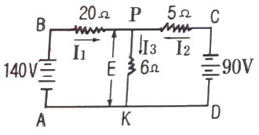
- 1
- 4
- 6
- 10
(정답률: 54%)
63. CVR(Cockpit Voice Recorder)에 대한 설명으로 옳은 것은?
- HF 또는 VHF를 이용하여 통화를 한다.
- 항공기 사고원인 규명을 위해 사용되는 녹음장치이다.
- 지상에 있는 정비사에게 경고하기 위한 장비이다.
- 지상에서 항공기를 호출하기 위한 장치이다.
(정답률: 75%)
64. 항공기 계기 중 압력 수감부를 이용한 것이 아닌 것은?
- 고도계
- 방향지시계
- 승강계
- 대기속도계
(정답률: 68%)
65. 항공기에 사용되는 전선의 굵기를 결정할 때 고려해야 할 사항이 아닌 것은?
- 도선내 흐르는 전류의 크기
- 도선의 저항에 따른 전압강하
- 도선애 발생하는 줄(Joule) 열
- 도선과 연결된 축전지의 전해액 종류
(정답률: 70%)
66. 터보팬 항공기의 방빙(anti-icing)장치에 관한 설명으로 틀린 것은?
- 윈드실드는 내부 금속 피막에 전기를 통하여 방빙한다.
- 피토관의 방빙은 내부의 전기 가열기를 사용한다.
- 날개 앞전의 방빙은 엔진 압축기의 고온 공기를 사용한다.
- 엔진의 공기흡입장치의 방빙은 화학적 방빙계통을 사용한다.
(정답률: 58%)
67. 항공기 계기에서 플랩의 작동 범위를 표시하는 것은?
- 녹색호선(green arc)
- 백색호선(white arc)
- 황색호선(yellow arc)
- 적색방사선(red radiation)
(정답률: 71%)
68. 직류발전기에서 발생하는 전기자 반작용을 없애기 위한 것은?
- 보극(interpole)
- 직렬권선(series-winding)
- 병렬권선(shunt-winding)
- 회전자권선(armature coil)
(정답률: 57%)
69. 자동조종장치(autopilot)의 구성요소에 해당하지 않는 것은?
- 출력부(output elements)
- 전이부(transit elements)
- 수감부(sensing elements)
- 명령부(command elements)
(정답률: 58%)
70. 발전기 출력 제어회로에서 제너다이오드(zener diode)의사용 목적은?
- 정전류제어
- 역류방지
- 정전압제어
- 자기장제어
(정답률: 52%)
71. 장거리 통신에 유리하나 잡음(noise)이나 페이딩(fading)이 많으며 태양 흑점의 활동으로 인한 전리층 산란으로 통신 불능이 가끔 발생되는 항공기 통신장치는?
- HF 통신장치
- MF 통신장치
- LF 통신장치
- VHF 통신장치
(정답률: 59%)
72. 다음 중 화재 진압 시 사용되는 소화제가 아닌 것은?
- 물
- 이산화 탄소
- 할론
- 암모니아
(정답률: 73%)
73. 비행 중에 비로부터 시계를 확보하기 위한 제우(rain protection)시스템이 아닌 것은?
- Air curtain system
- Rain repellent system
- Windshield wiper system
- Windshield washer system
(정답률: 64%)
74. 자기컴퍼스의 조명을 위한 배선 시 지시오차를 줄이기 위한 방법으로 옳은 것은?
- 음(-)극성을 가능한 자기컴퍼스 가까이에 접지시킨다.
- 양(+)극선과 음(-)극선은 가능한 충분한 간격을 두고 음(-)극선에는 실드선을 사용한다.
- 모든 전건은 실드선을 사용하여 오차의 원인을 제거한다.
- 양(+)국선과 음(-)극선을 꼬아서 합치고 접지점을 자기컴퍼스에서 충분히 멀리 뗀다.
(정답률: 57%)
75. 항공기 유압계통에서 축압기(accumulator)의 사용 목적으로 옳은 것은?
- 유압유 내 공기 저장
- 작동유의 누출을 차단
- 계통내 작동유의 방향 조정
- 비상 시 계통 내 작동유 공급
(정답률: 66%)
76. 유압계통에서 기기의 실(seal)이 손상 또는 유압관의 파열로 작동유가 완전히 새어나가는 것을 방지하기 위해 설치한 안전장치는?
- 유압퓨즈(hydraulic fuse)
- 오리피스밸브(orifice valve)
- 분리밸브(disconnect valve)
- 흐름조절기(flow regulator)
(정답률: 68%)
77. 항공계기에 요구되는 조건으로 옳은 것은?
- 기체의 유효 탑재량을 크게 하기위해 경량이어랴 한다.
- 계기의 소형화를 위하여 화면은 작게하고 본체는 장착이 쉽도록 크게 해야 한다.
- 주위의 기압과 연동이 되도록 승강계, 고도계, 속도계의 수감부와 케이스는 노출이 되도록 해야 한다.
- 항공기에서 발생하는 진동을 알 수 있도록 계기판에는 방진장치를 설치해서는 안된다.
(정답률: 61%)
78. 계기착륙장치(instrument landing system)의 구성장치가 아닌 것은?
- 로컬라이저(locaizer)
- 마커 비컨(marker beacon)
- 기상 레이다(weather radar)
- 글라이드 슬로프(glide slope)
(정답률: 74%)
79. 객실여압장치를 가진 항공기 여야계통 설계 시 고려해야 하는 최소 객실고도는?
- 2400ft
- 8000ft
- 10000ft
- 해면고도
(정답률: 76%)
80. 항공기가 산악 또는 지면과 충돌하는 것을 방지하는 장치는?
- Air traffic control system
- Inertial navigation system
- Distance measuring equipment
- Ground proximity warning system
(정답률: 77%)